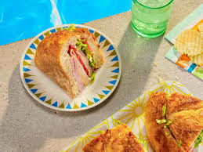

<!DOCTYPE html>

<html>
    <head>
        <meta charset="UTF-8">
    </head>
</html>

<body>
    <h1> The Ultimate Pool Sandwich</h1>
    
    <br>
    <br>
    <br>

    <h3>Description</h3>

    <p>A "pool sandwich" is a popular term for a sandwich 
    that's typically eaten after spending time in a pool 
    or at a poolside gathering. It often features a 
    combination of ingredients that are both satisfying 
    and easy to eat on the go, such as cold cuts, cheese, 
    chips, and lettuce. </p>

    <h3>Ingredients</h3>

    <ul>
        <li>1 round bread loaf</li>
        <li>2 tablespoons butter</li>
        <li>2 tablespoons yellow mustard</li>
        <li>2 cups shredded iceberg lettuce</li>
        <li>1/2 pound sliced deli ham</li>
        <li>1/2 pound sliced deli turkey</li>
        <li>6 slices Swiss cheese</li>
        <li>6 slices Cheddar or Colby Jack cheese</li>
    </ul>

    <h3>Steps</h3>

    <ol>
        <li>Preheat the oven to 350 degrees F (175 degrees C).</li>
        <li>Cut a wide circle out of the bread loaf top like you’re making a soup bread bowl. Carefully remove and set aside the loaf top. </li>
        <li>Hollow out the bread interior, being careful not to break through the sides. The loaf interior can be used to make croutons, so there’s no waste. </li>
        <li>Melt butter with mustard in the microwave for 15 seconds in a small bowl. Mix well. </li>
        <li>Brush butter mixture onto the exterior of the bread loaf and top; place loaf and top on a baking sheet. </li>
        <li>Bake in the preheated oven for 10 minutes. Let cool. </li>
        <li>Pat lettuce dry and place a layer in the bottom of the hollowed-out loaf. Layer cheese over lettuce. Add a layer of ham and turkey. Repeat until the loaf is full. Top with reserved bread top. </li>
        <li>Wrap sandwich in plastic wrap and put on a baking sheet. Place another baking sheet on top with something to weigh it down. </li>
        <li>Place the completed sandwich on the baking sheet in the refrigerator for at least 1 hour or overnight. </li>
        <li>Keep the sandwich whole or cut it into easy triangular sections. </li>
    </ol>
    
    <br>
    <a href="../index.html">Home</a>
    <br>
    <br>

</body>